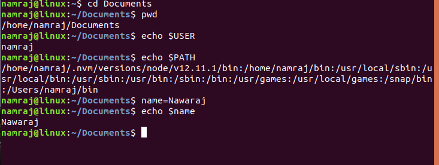
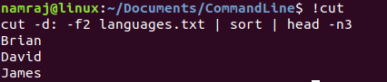
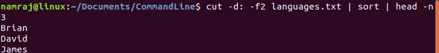
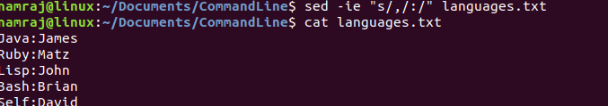
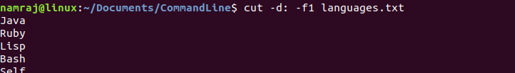

Environment varaiable are declared like name=Namraj but when invoked $ sign is required.
To print last command we can type double exclamation or bang.ie !! and to issue last command typed !command like this.
Pipe is used when a output of one command is input to other command.
Sed is used to search and replace a string. sed used -ie flag to update file in place where -e is error flag.
Cut is used to search a string delimited. cut use flag -d followed by delimiter and flag -f followed by number which tell which column to select.
history | awk {print $2} df -h | awk "fnr=2 print{$5}"